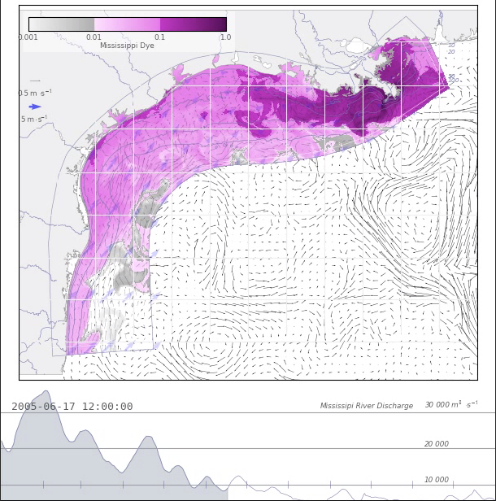

Research
Many models are run in the Oceanography department at Texas A&M and we are working to provide the model output to the public as conveniently as possible. As such, a lot of model output is available online via a Thredds server.
As a group, we use a variety of computational tools. Many of our numerical simulations are run using the Regional Ocean Modeling System (ROMS). We use the NumPy and SciPy packages from the Python programming language for much of our analysis, and matplotlib for our visualization. In an effort to promote open science and scientific reproducibility, we use GitHub to store and share our scripts as well as to collaborate. We also use iPython notebooks as an easy way to display and share our work.
We are fans of many of the design ideas put forth by Edward Tufte and incorporate them as much as possible into our scientific figures.
TX-LA Hindcast Modeling
 A high resolution hindcast model has been run for the years 2004-2012. Model output is posted on a Thredds server and movies can be found online as well.
TX-LA Forecast Modeling
 Images from a forecast simulation of the Texas-Louisiana shelf are available online.
Images from a forecast simulation of the Texas-Louisiana shelf are available online.
Gulf of Mexico Forecast Modeling
 A forecasting model of the full Gulf of Mexico is maintained in PONG. NOAA's Oil Spill and Response GNOME uses the output in its spill predictions. Images are provided online.
A forecasting model of the full Gulf of Mexico is maintained in PONG. NOAA's Oil Spill and Response GNOME uses the output in its spill predictions. Images are provided online.
Harmful Algal Bloom Modeling
 Harmful algal blooms (specifically red tides, in this research) occur periodically in the fall in Texas waters and can cause respiratory problems in fishermen and boaters and shut down recreation and shellfish harvesting in the affected areas. Biological effects alone do not adequately explain the rapidity with which harmful algal bloom events can occur. However, some recent research indicates that the circulation of the northern Gulf of Mexico can help to explain the occurrences.
Harmful algal blooms (specifically red tides, in this research) occur periodically in the fall in Texas waters and can cause respiratory problems in fishermen and boaters and shut down recreation and shellfish harvesting in the affected areas. Biological effects alone do not adequately explain the rapidity with which harmful algal bloom events can occur. However, some recent research indicates that the circulation of the northern Gulf of Mexico can help to explain the occurrences.
Recent work with Rob Hetland, in collaboration with Lisa Campbell, is focused on better understanding the source of harmful algal blooms off the Texas coastline using a numerical model of the Texas and Louisiana shelf waters.
Thyng, K. M., R. D. Hetland, M. T. Ogle, X. Zhang, F. Chen, L. Campbell, "Origins of harmful algal blooms along the Texas coast" (in review).
Oil Transport and Fate
 As part of the Gulf Integrated Spill Research (GISR) consortium, my group is one-way nesting a ROMS model of the Texas-Louisiana shelf in a Gulf of Mexico model, which will force a SUNTANS model of Galveston Bay. A near-field subsea blow-out model will determine the composition of oil and gas with depth, which will then be traced through the nested models to understand the fate of oil from an oil spill.
As part of the Gulf Integrated Spill Research (GISR) consortium, my group is one-way nesting a ROMS model of the Texas-Louisiana shelf in a Gulf of Mexico model, which will force a SUNTANS model of Galveston Bay. A near-field subsea blow-out model will determine the composition of oil and gas with depth, which will then be traced through the nested models to understand the fate of oil from an oil spill.
We are working on wrapping the particle tracking code TRACMASS in Python to make it easy to utilize with our model output, and by other researchers. We call this wrapped code system TracPy. You can read more about using TracPy in an online user manual.
Merrimack River Plume Modeling
 TAMU researchers are involved with modeling the Merrimack River in Massachusetts in the Merrimack River Mixing and Divergence Experiments (MERMADE) group.
TAMU researchers are involved with modeling the Merrimack River in Massachusetts in the Merrimack River Mixing and Divergence Experiments (MERMADE) group.
Hypoxia Modeling
 Hypoxia, or low dissolved oxygen concentration, is a typical occurrence in the northern Gulf of Mexico and can lead to large fish kills. The causes of this problem are being studied in the Mechanisms Controlling Hypoxia (MCH) group.
Hypoxia, or low dissolved oxygen concentration, is a typical occurrence in the northern Gulf of Mexico and can lead to large fish kills. The causes of this problem are being studied in the Mechanisms Controlling Hypoxia (MCH) group.
Drifter Monitoring
 We are helping to monitor drifters in the Gulf of Mexico from Chinese researchers, particularly Dongliang Yuan at the Chinese Acadamy of Sciences, Institute of Oceanology in Qingdao.
We are helping to monitor drifters in the Gulf of Mexico from Chinese researchers, particularly Dongliang Yuan at the Chinese Acadamy of Sciences, Institute of Oceanology in Qingdao.
The drifter locations are updated on the plot once a day. This data will be used in the future to compare with numerical model output. A larger version of this image is available